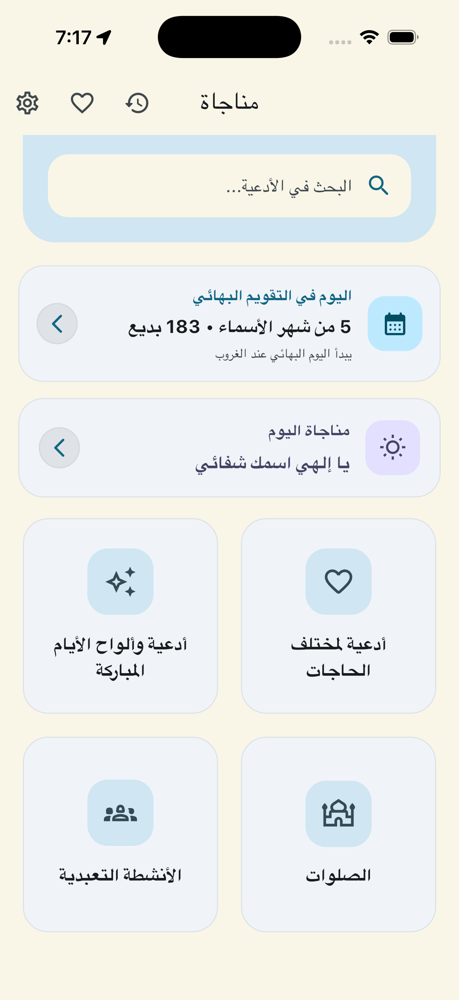
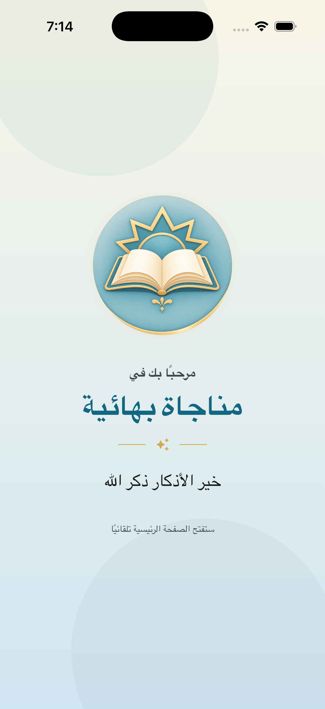
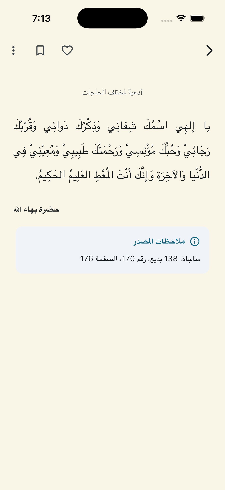
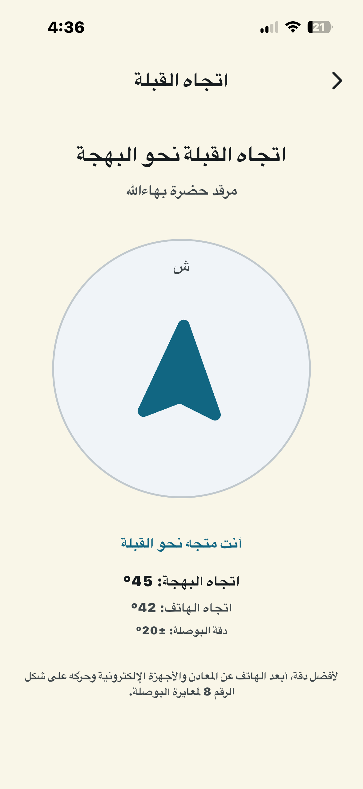
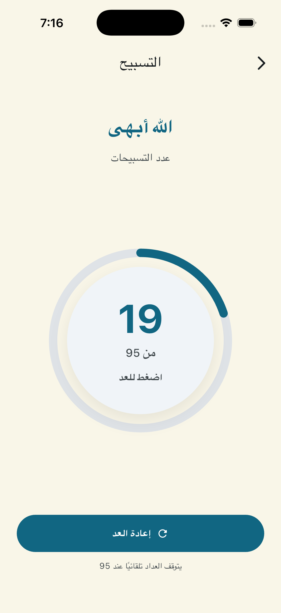
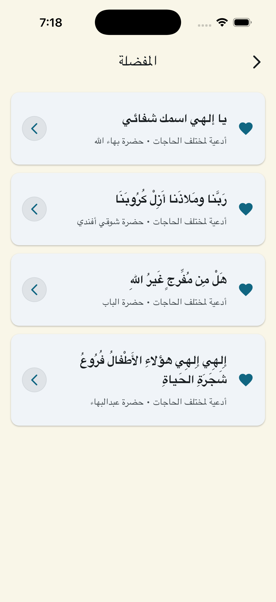

المفضلة
حفظ الأدعية التي تريد الرجوع إليها بسرعة.
تطبيق عربي يجمع الصلوات والمناجات البهائية في واجهة هادئة وواضحة، مع أدوات تساعد على القراءة والوصول السريع إلى المحتوى.
نسخة Android قيد الاختبار قبل الإطلاق العام.

التركيز على القراءة الواضحة، والتنقل السهل، والأدوات الأساسية.
حفظ الأدعية التي تريد الرجوع إليها بسرعة.
بوصلة للمساعدة في تحديد اتجاه القبلة نحو مرقد حضرة بهاء الله.
عداد تسبيح بسيط حتى 95 مرة.
واجهة هادئة ونصوص واضحة لقراءة المحتوى بسهولة.
الصور أدناه هي لقطات التطبيق الأصلية كما هي، من دون إعادة تصميم أو تعديل للمحتوى.





يتم اختبار نسخة Android عبر Google Play قبل الإطلاق العام، تمهيداً لإتاحتها للمستخدمين.
يستخدم التطبيق موقع الجهاز عند تشغيل ميزة اتجاه القبلة للمساعدة في تحديد الاتجاه الصحيح بالنسبة إلى موقعك.
قراءة سياسة الخصوصية